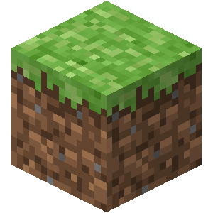
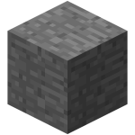
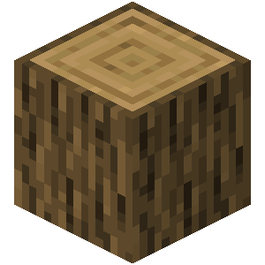
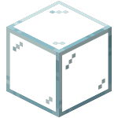
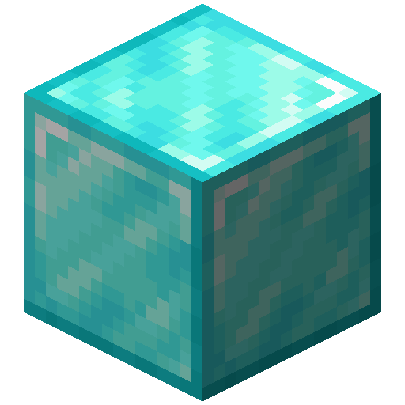

-

Bloque de Pasto
Se encuentra comúnmente en la superficie del Overworld. Es esencial para la vegetación y la reaparición de animales.
-

Piedra
Material básico y sólido para cimientos, muros y estructuras subterráneas.
-

Madera de Roble
Troncos fundamentales para crear vigas, pilares y tablas de madera.
-

Cristal
Bloque transparente indispensable para ventanas y tragaluces.
-

Bloque de Diamante
Bloque compacto de gran valor para acabados de lujo y decoración ostentosa.